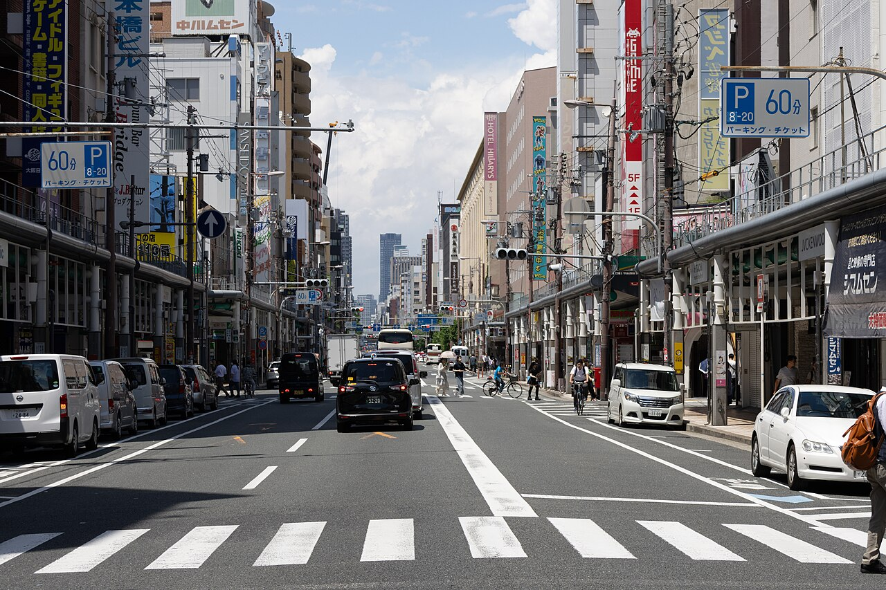
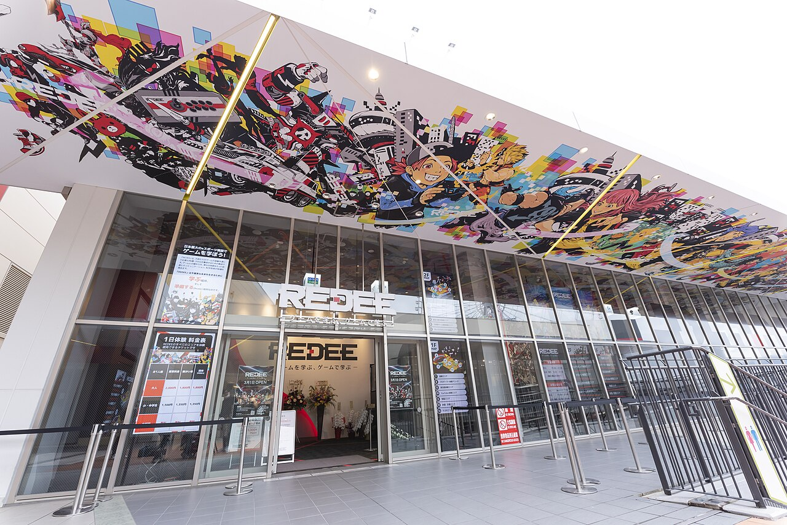
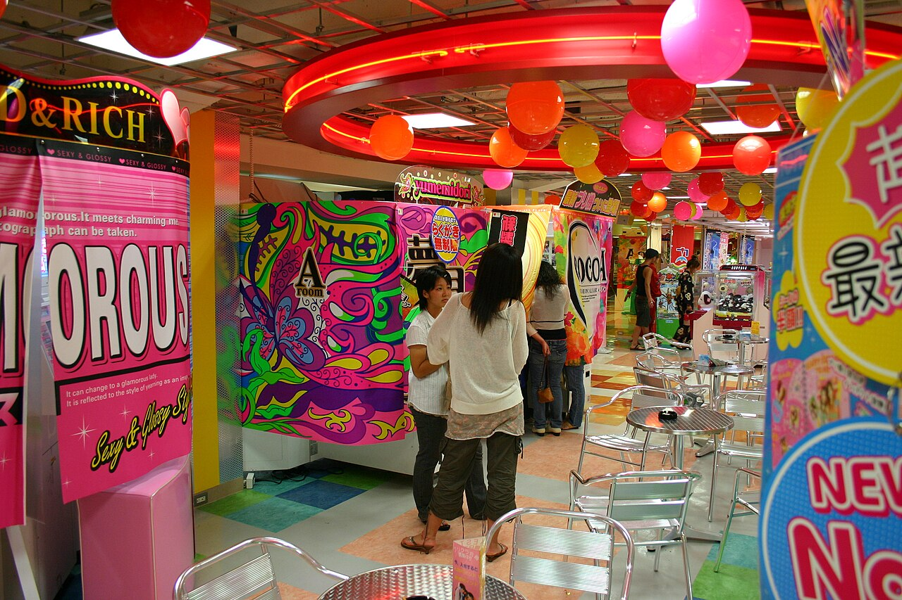

Nipponbashi Den Den Town is Osaka's answer to Akihabara: a long strip of game shops, retro stores, arcades, figure shops and electronics, slightly cheaper and noticeably less touristy than the Tokyo version.



Super Potato has an Osaka branch here, plus a dozen smaller shops with deeper bargain bins than Tokyo.
Taito Station and Silver Ball Planet pinball, plus retro cabinets scattered through the strip.
Multiple floors of collectibles, and trading-card shops where locals actually play.
Capsule machines and parts bins, the treasure-hunt end of the hobby.
The parallel street where the anime and gaming shops concentrate, start there.